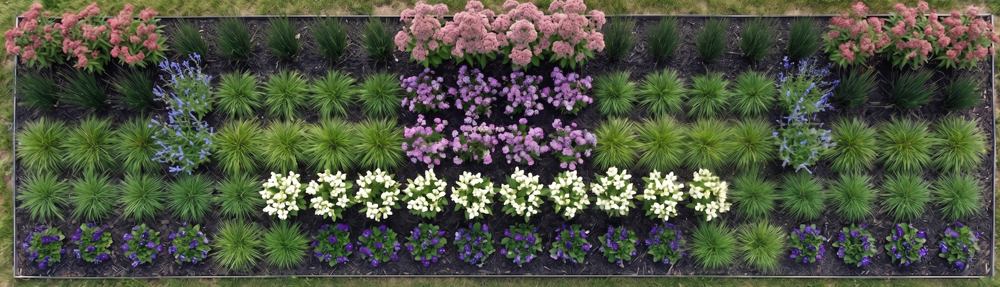
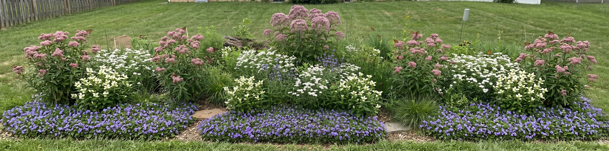

Most butterfly gardens are just truck stops—a quick sugary drink before the bugs leave. We are building a permanent 100-square-foot swamp in the backyard for rare Pennsylvania butterflies to live in full-time. Instead of just a quick snack, this habitat gives the Baltimore Checkerspot, Harris' Checkerspot, and Silver-Bordered Fritillary everything they need to hatch, eat, sleep safely through the winter, and lay eggs year after year.
Exactly 100 plants go into this 5x20 grid. No swapping them out if we want these specific butterflies to move in.


Height: 6-12" | Spread: 8-12"
We are planting these exactly level with the dirt. If we bury the base, they will rot. We'll let them spread out to cover the empty dirt in the front.
Height: 2-4' | Spread: 1.5-2'
These grow into thick clumps. It might look bare the first year, but they grow fast. This will be the main target for the butterfly eggs.
Height: 3-5' | Spread: 2-3'
These spread naturally underground. Over the next few years, we'll let them slowly crawl out and fill in the spaces behind our turtleheads.
Height: 3-5' | Spread: 2-3'
These have a very long, deep root. We have to dig deep holes and make sure the root points straight down. If we bend the root like a "J", it ruins the plant.
Height: 4-6'+ | Spread: 3-4'
These turn into giant monsters. We are keeping them shoved all the way to the back row, or they will block the sun from our smaller plants.
Height: 3-5' | Spread: 1-2'
These don't live forever, but they drop a ton of seeds. We're just going to let them drop their seeds in the fall so they can naturally replace themselves.
We aren't piling the dirt up high. We are digging the whole 5x20 area down 3 to 4 inches deeper than the grass around it. We are building a shallow bowl so rain water flows into the garden and stays there.
Butterflies need to be warm to fly. We are putting 2 or 3 big, flat rocks right at the front edge. The sun will heat up the rocks, and the butterflies will sit on them in the morning to warm up their wings.
We're placing an old, rotting log behind the plants in the back. It acts like a giant sponge to hold water, and it gives good bugs a place to hide so they can eat the bad bugs.
Target Info
Description goes here.